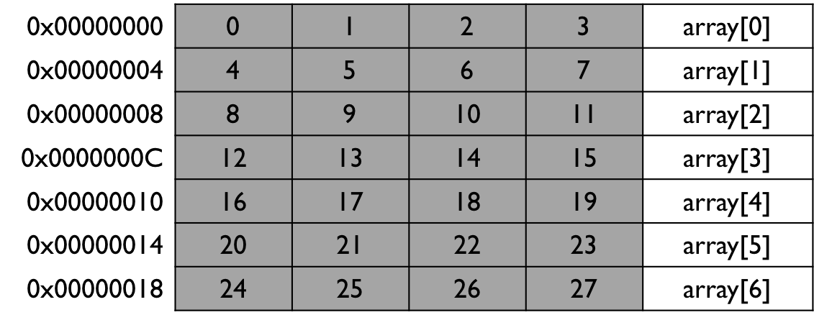

A variable represents a single location in memory. A collection of variables in a contiguous address space is known as an array. The behaviour of arrays and pointers are closely related. A diagram of how an integer array may be stored in memory is shown below.

This example represents an integer array with 7 elements named array. Note that the arrays are zero-indexed i.e. start from 0. All the elements in the array appear in adjacent memory locations and take up one row each. Individual elements of the array can be accessed using the square brackets and passing in the relevant index.
Arrays in which the contents of the array are known at compile-time are known as static arrays. When creating a static array, the size must be known and then cannot be changed. The size (or length) can be explicitly declared when creating, or can be inferred from the number of initialisation values provided. Note that it is not possible to use a variable to specify the size of an array, you must use a literal value. The example below demonstrates how to create an array.
1 2 3 4 5 6 7 8 9 10 11 12 13 14 15 16 17 |
#include <iostream> int main() { // initialse an array with values int array[5] = {100, 101, 102, 103, 104}; // iterate over the array and print the values for (int i = 0; i < 5; i++) { std::cout << "array[" << i << "] = " << array[i] << std::endl; } // since C++11, we can use range-based for loops. Note we don't // have to know the length of the array, however we don't // automatically get the array index like a traditional // for loop for (int value : array) { std::cout << value << std::endl; } } |
Here we can see that we have created an integer array with 5 values. We could have actually left the square brackets empty as we have provided 5 initial values using a braced initialiser list. Arrays of other datatypes can also be created by substituting for the relevant keyword (e.g. char or double).
Once you have an array, it is very common to find yourself having to iterate over the values in the array using a for loop. It is important that you know the size of the array so you can configure the for loop with the relevant conditional statement. C++11 introduced range-based for loops in which the size of the array can be automatically determined. Although this has its advantages, it unfortunately does not give you direct access to the loop index (e.g. i in this example). The output of the code is shown below.
array[0] = 100 array[1] = 101 array[2] = 102 array[3] = 103 array[4] = 104 100 101 102 103 104
As well as having fixed-length arrays that are created at compile-time, it is also possible to create arrays whose lengths are determined at run-time. These are known as dynamic arrays. The example below shows how to create a dynamic array.
1 2 3 4 5 6 7 8 9 10 11 12 13 14 15 16 17 |
#include <iostream> int main() { // when we dynamically create an array, we can specify the length // of the array using a variable int n = 10; int *array = new int[n]; // iterate over the loop and set the elements to some values for (int i = 0; i < n; i++) { array[i] = i * i; std::cout << "array[" << i << "] = " << array[i] << std::endl; } // when we've finished, delete the memory and null the pointer to be safe delete[] array; array = nullptr; } |
Here we create an integer pointer and create the array using the new operator which will allocate enough memory for an array of the requested size. We can then treat the array the same as previously and iterate over it etc. When creating a dynamic array, it is very important to free up the memory using delete to prevent memory leaks occurring. It can also be good practice to null the pointer to the array just to ensure that it cannot be accidently used to access the memory later. The output of the code is below.
array[0] = 0 array[1] = 1 array[2] = 4 array[3] = 9 array[4] = 16 array[5] = 25 array[6] = 36 array[7] = 49 array[8] = 64 array[9] = 81
There is a close relationship between pointers and arrays due to the fact that they are implicitly linked to memory addresses. Although we used to accessing array elements using the subscript index [], we can also do so via pointers. Some example code is below.
1 2 3 4 5 6 7 8 9 10 11 12 13 14 15 16 17 18 19 20 |
#include <iostream> int main() { // initialse an array with values int array[5] = {100, 101, 102, 103, 104}; // iterate over the array and print the values for (int i = 0; i < 5; i++) { std::cout << "array[" << i << "] = " << array[i] << std::endl; } // print out the address of each array element for (int i = 0; i < 5; i++) { std::cout << "address of array[" << i << "] = " << &array[i] << std::endl; } // array is equivalent to &array[0] std::cout << "array = " << array << std::endl; // we can use pointers to access the array elements for (int i = 0; i < 5; i++) { std::cout << "*(array+" << i << ") = " << *(array + i) << std::endl; } } |
The output of the code is below.
array[0] = 100 array[1] = 101 array[2] = 102 array[3] = 103 array[4] = 104 address of array[0] = 0x7ffedfde6b70 address of array[1] = 0x7ffedfde6b74 address of array[2] = 0x7ffedfde6b78 address of array[3] = 0x7ffedfde6b7c address of array[4] = 0x7ffedfde6b80 array = 0x7ffedfde6b70 &array[0] = 0x7ffedfde6b70 *(array+0) = 100 *(array+1) = 101 *(array+2) = 102 *(array+3) = 103 *(array+4) = 104
The code creates a static array and prints the address of each array element using the & operator. Note how the addresses go up by 4 each time due to the 32-bit (4 byte) size of an integer. The code then prints array without any subscript. It turns out that array is just the address of the first element in the array i.e. a pointer. We can then get access to the first value stored in the array using the de-reference operator *array. By incrementing this pointer, we can get access to later elements in the array. Hence array[i] is equivalent to *(array+i).
Arrays can also be passed to (and returned from) functions, just as variables can be. An example is below.
1 2 3 4 5 6 7 8 9 10 11 12 13 14 15 16 17 18 19 20 21 22 23 24 25 26 27 28 29 30 31 32 33 34 35 | #include <iostream> int sum_of_array(const int array[], int n); void square_array(int array[], int n); int main() { // create array and initialise int array[5] = {1, 2, 3, 4, 5}; // pass the array to the function (and its size) so we can calculate the sum int sum = sum_of_array(array, 5); std::cout << "Sum = " << sum << std::endl; // now pass to a function to square each value square_array(array, 5); for (int i = 0; i < 5; i++) { std::cout << "array[" << i << "] = " << array[i] << std::endl; } // calculate the new sum sum = sum_of_array(array, 5); std::cout << "New sum = " << sum << std::endl; } // note that the array is described as const here so that the function cannot // modify the contents int sum_of_array(const int array[], int n) { int sum = 0; for (int i = 0; i < n; i++) { sum += array[i]; } return sum; } // this function needs to modify the array and so isn't const void square_array(int array[], int n) { for (int i = 0; i < n; i++) { array[i] = array[i] * array[i]; } } |
The example has two functions, one to calculate the sum of an array and the other to square each element in an array. Each function accepts an array as a argument. Note that the subscript [] is used in the list of function arguments to tell the compiler that an array is being passed in. Also note that we must pass in the length of an array, as the function cannot automatically determine the length.
For the sum function, we do not want the function to modify the contents of the array. We therefore use the const keyword in front of the function argument. This prevents the function from being able to modify it. You can thinkof it as the function having only read-only access to the array. However, for the square function, we do want the function to be able to modify the values and hence we do not use the const keyword.
The output is below.
Sum = 15 array[0] = 1 array[1] = 4 array[2] = 9 array[3] = 16 array[4] = 25 New sum = 55